Linkin Park
История Linkin Park началась в 1996 году в Агура-Хиллз, Калифорния, когда трое старшеклассников — Майк Шинода (вокал, клавишные) и Брэд Дэлсон (гитара) вместе с Робом Бурдоном (барабанщиком) — основали группу под названием Xero. Несмотря на талант, группа не могла найти постоянного вокалиста, пока менеджер Джефф Блу не познакомил их с Честером Беннингтоном (бывшим фронтменом Grey Daze), чьи нечеловеческие скримы и мелодичный тенор мгновенно вписались в агрессивный рэп-рок Майка. Парни переименовались в Linkin Park (искажённое «Lincoln Park» в честь парка в Санта-Монике, но домен lincolnpark.com был занят) и в 1999 году записали демо-кассету Hybrid Theory EP.
Участники
Chester Bennington — вокал (до 2017)
Mike Shinoda — вокал, рэп
Brad Delson — гитара
Dave "Phoenix" Farrell — бас
Joe Hahn — DJ
Rob Bourdon — барабаны
Emily Armstrong — вокал с 2024
Альбомы
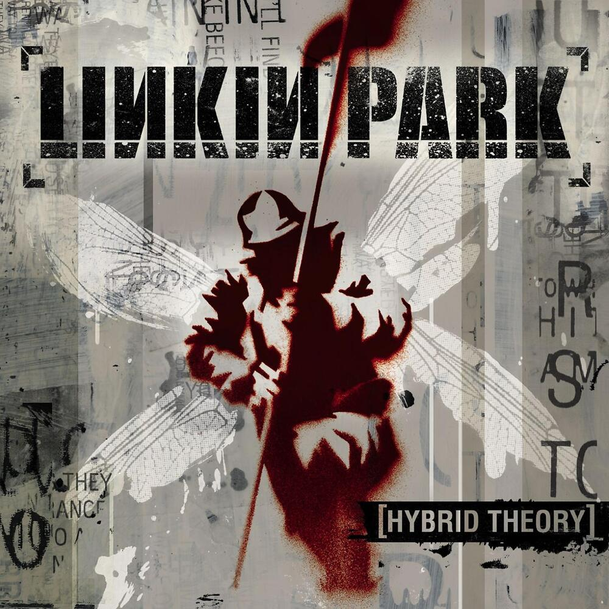
Hybrid Theory (2000)
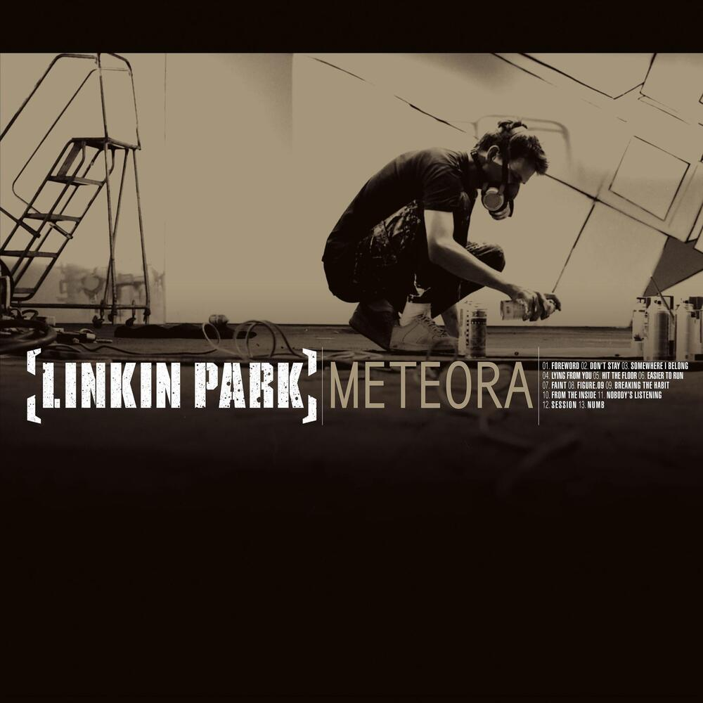
Meteora (2003)
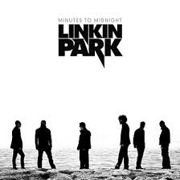
Minutes to Midnight (2007)
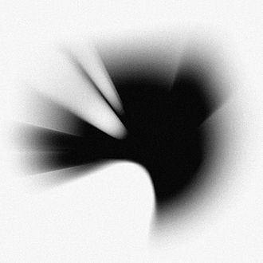
A Thousand Suns (2010)
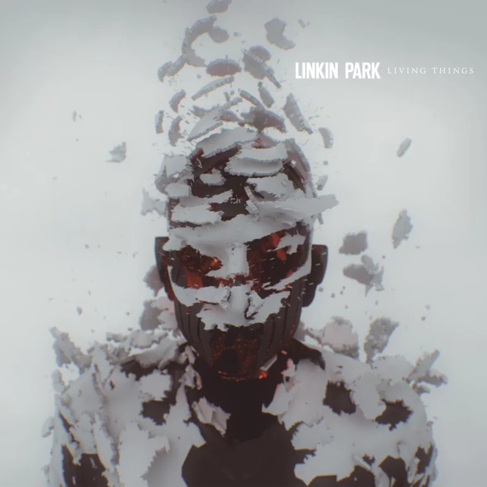
Living Things (2012)
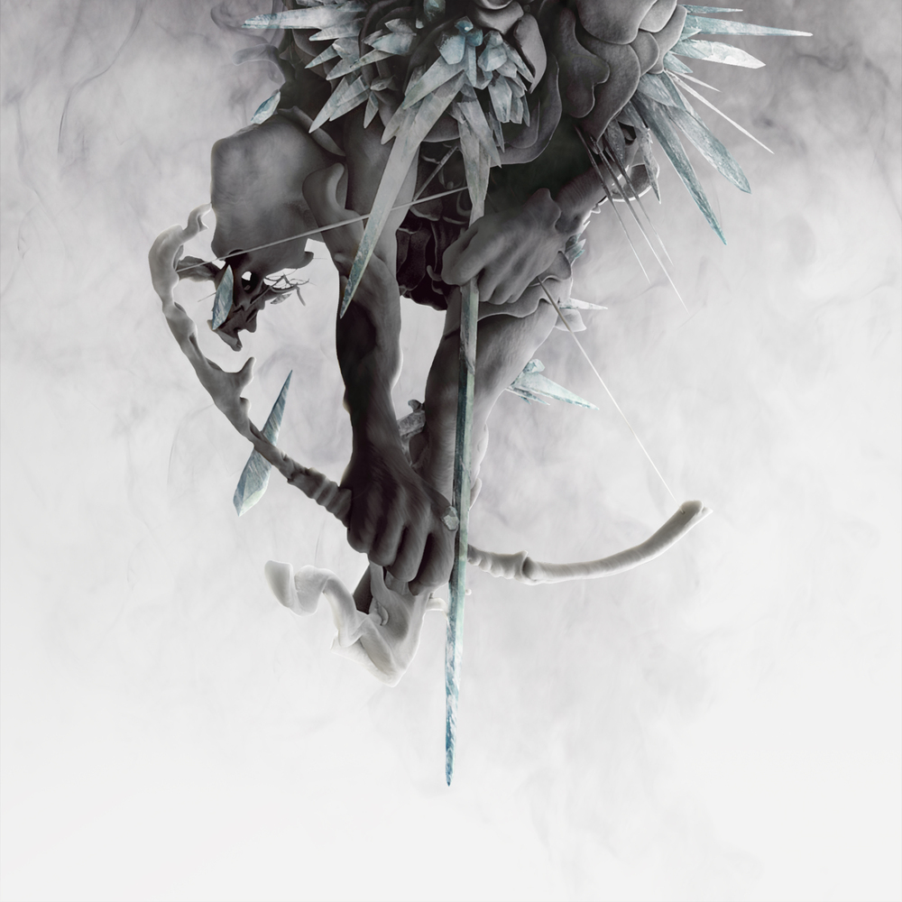
The Hunting Party (2014)
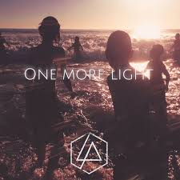
One More Light (2017)
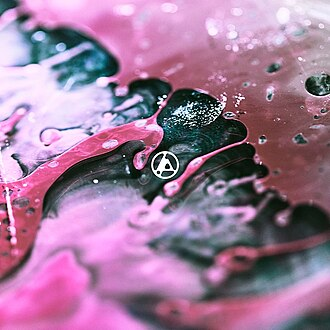
From Zero (2024)
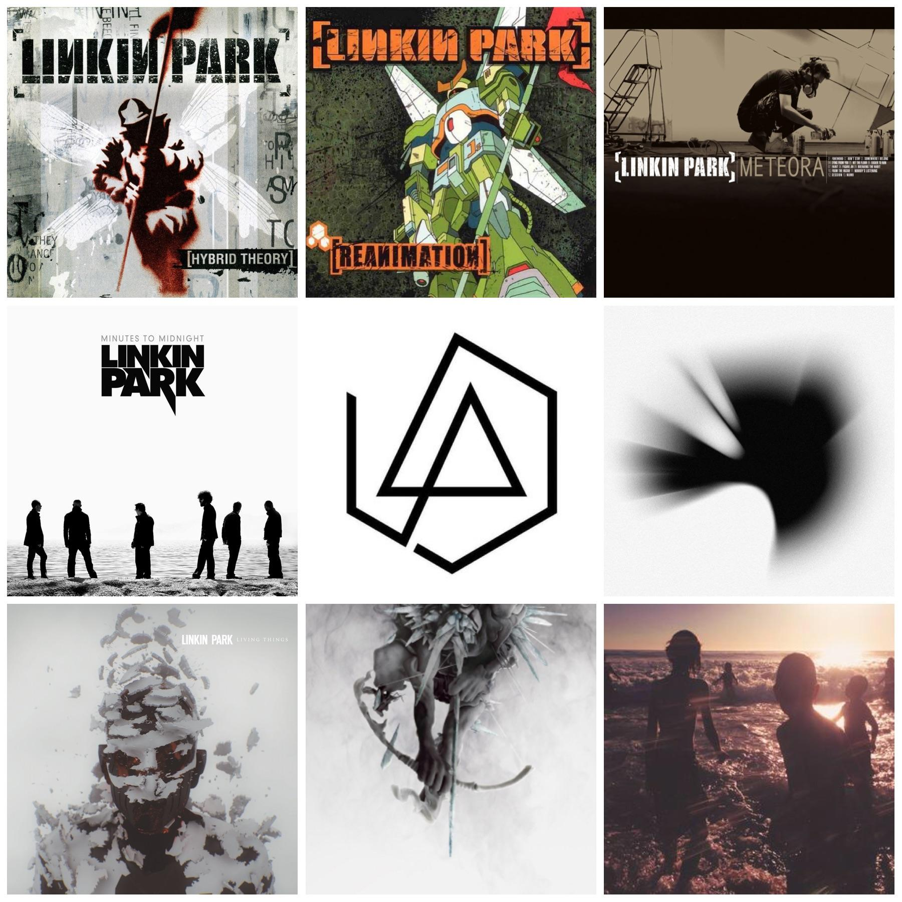
Подписав контракт с Warner Bros., группа выпустила дебютный альбом Hybrid Theory (2000), который стал феноменом: продан тиражом более 30 миллионов копий (самый продаваемый дебют XXI века на тот момент). Синглы «In the End» (с культовым фортепианным риффом), «Crawling» (премия «Грэмми» за лучшее хард-рок исполнение) и «One Step Closer» сделали Linkin Park голосом поколения, говорившим о депрессии, травле и внутренней боли доступным языком. Второй альбом Meteora (2003) повторил формулу, но добавил больше оркестровок и восточных мотивов.
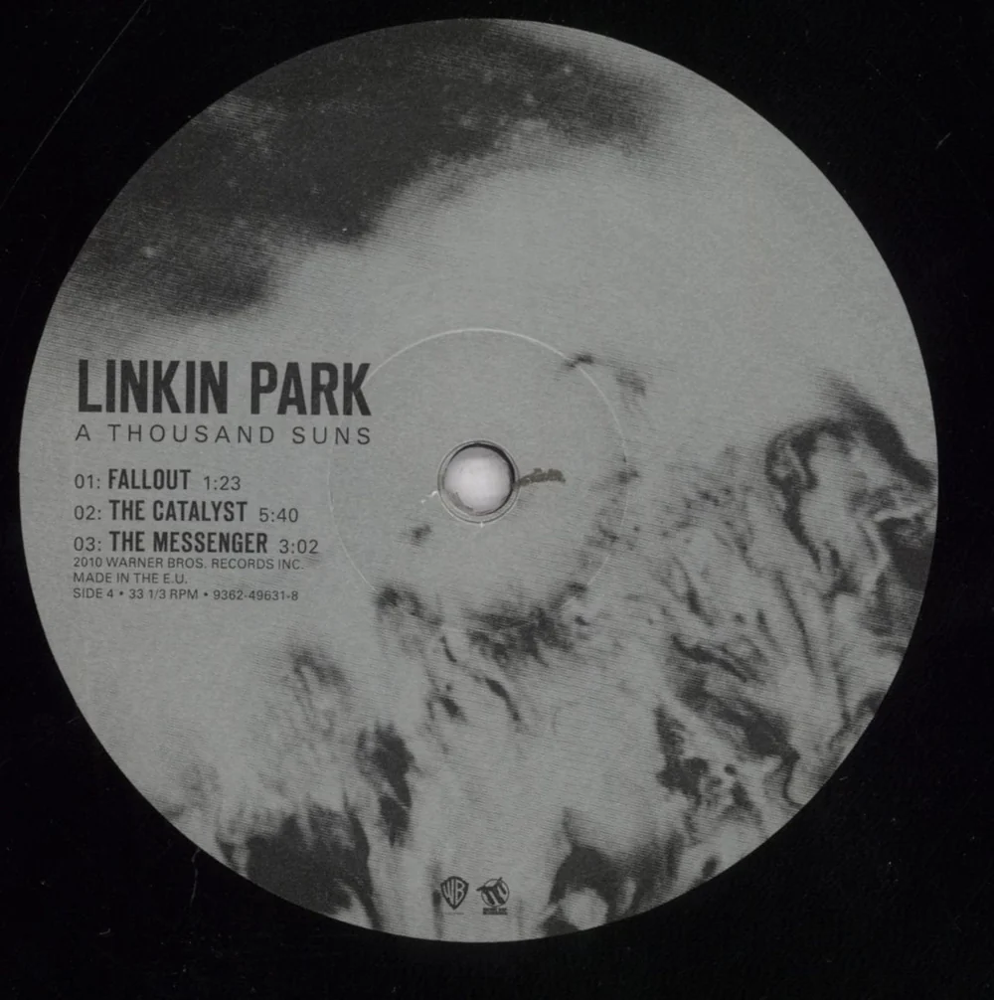
Решив сломать шаблоны, Linkin Park выпустили Minutes to Midnight (2007), где практически исчезли рэп-партии Майка и скримы Честера, уступив место классическому року и протестным текстам. Ещё радикальнее стал A Thousand Suns (2010) — концептуальная пластинка о ядерной войне и страхе, почти без гитар, полная электроники, эмбиента и spoken word. Это был самый спорный альбом: одни называли его шедевром, другие — предательством.
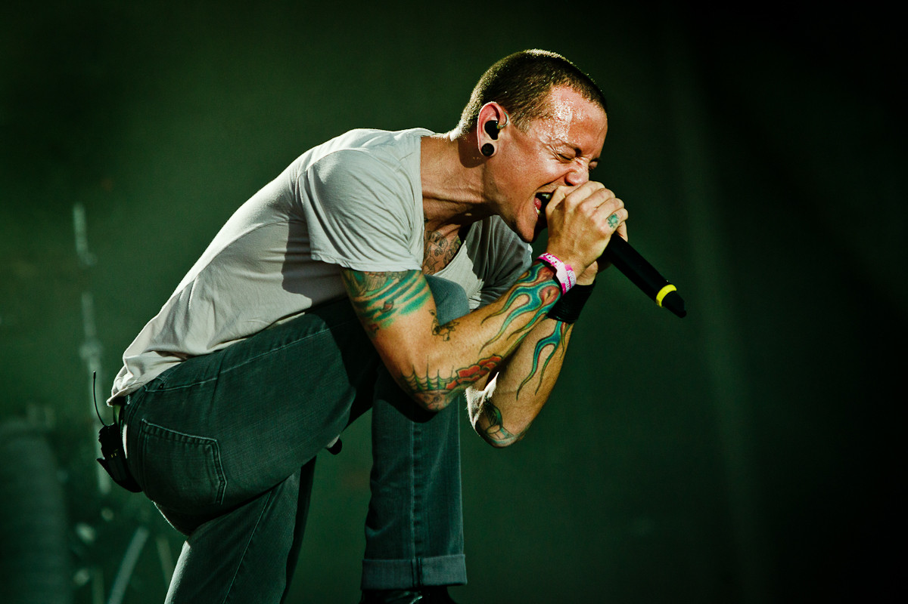
Последним прижизненным альбомом стал One More Light (2017) — радикальный уход в поп-музыку. Критики уничтожили пластинку за «коммерческое самоубийство», а фанаты освистали сингл «Heavy». Однако Честер защищал альбом как «самый честный и личный». За кулисами его демоны победили: 20 июля 2017 года Честер Беннингтон покончил с собой. Мир метался между шоком и горем. Группа замолчала почти на семь лет.
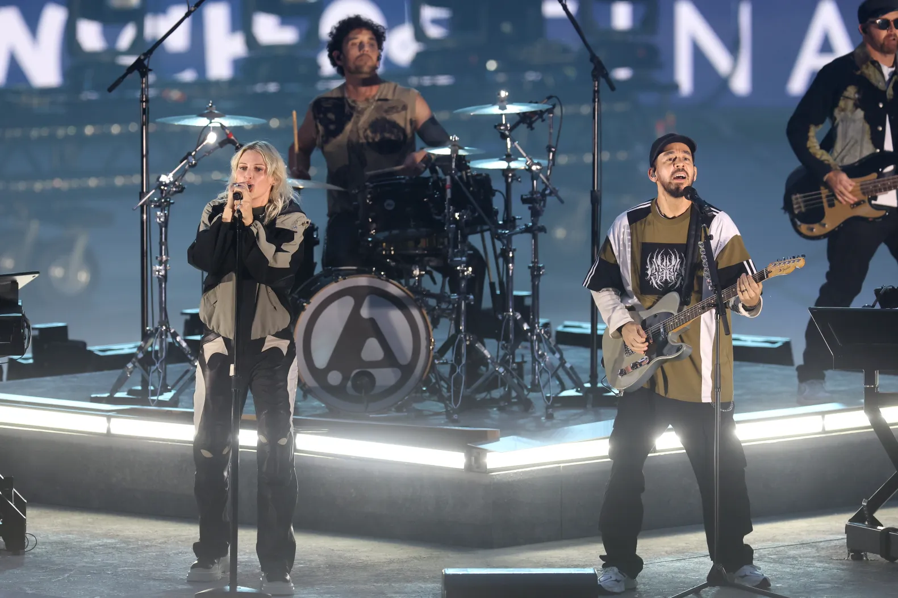
В сентябре 2024 года Linkin Park шокировали мир: они объявили о возвращении с новой вокалисткой — Эмили Армстронг (экс-фронтвумен группы Dead Sara). Её звонкий, грубоватый тембр и мощные скримы напомнили Честера, но без попытки копировать. Альбом From Zero (ноябрь 2024) сочетает все эры группы. Фанаты разделились, но Linkin Park вновь хедлайнеры Coachella и Download, а продажи туров бьют рекорды. История продолжается.